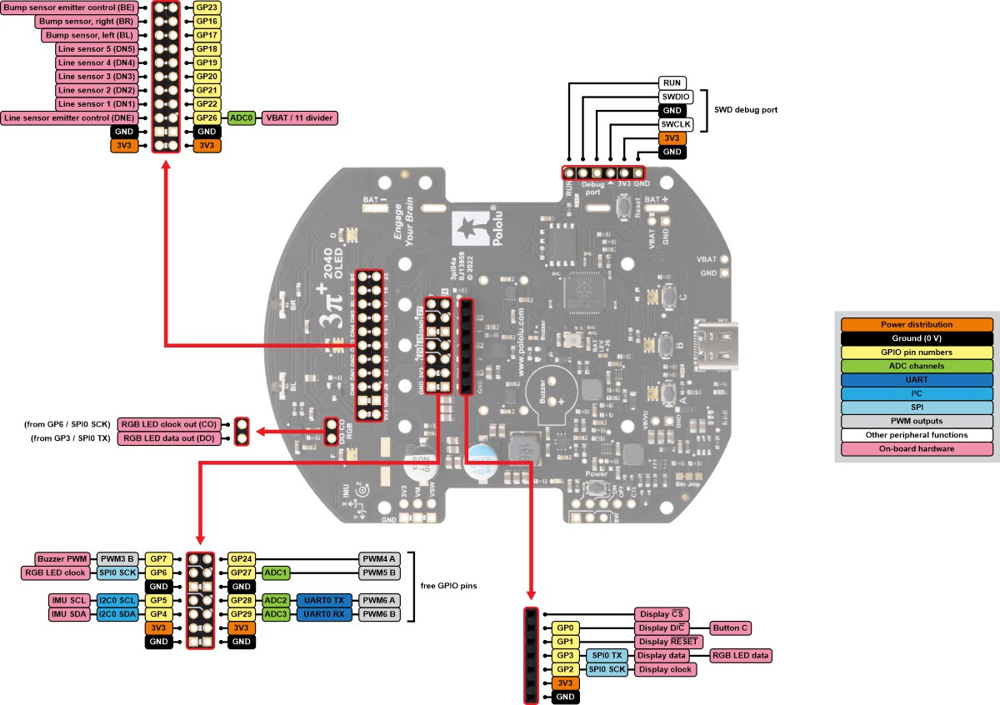
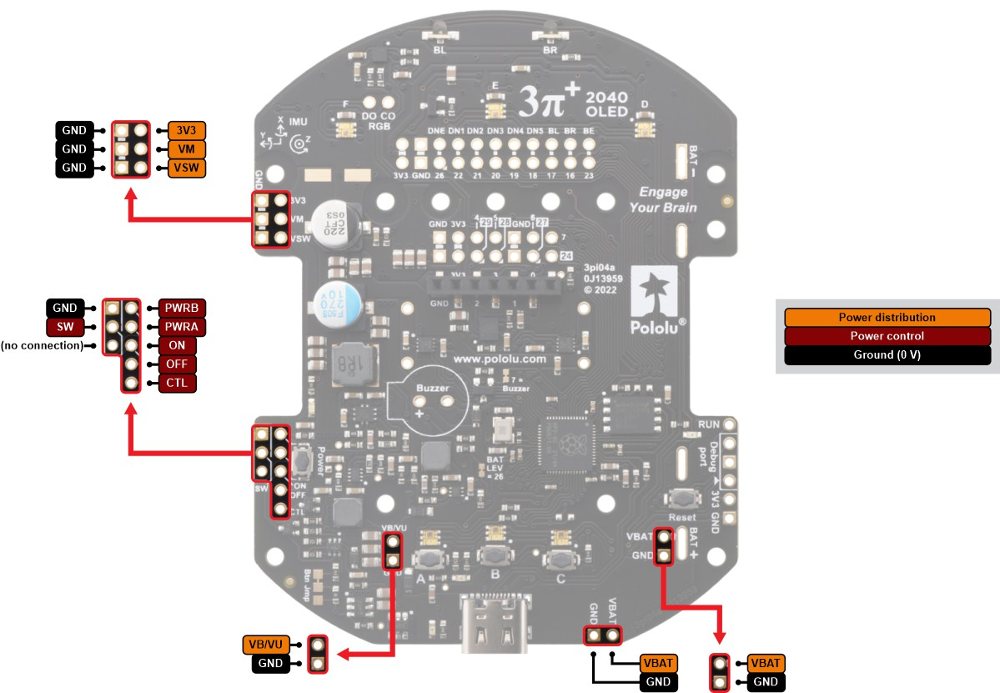
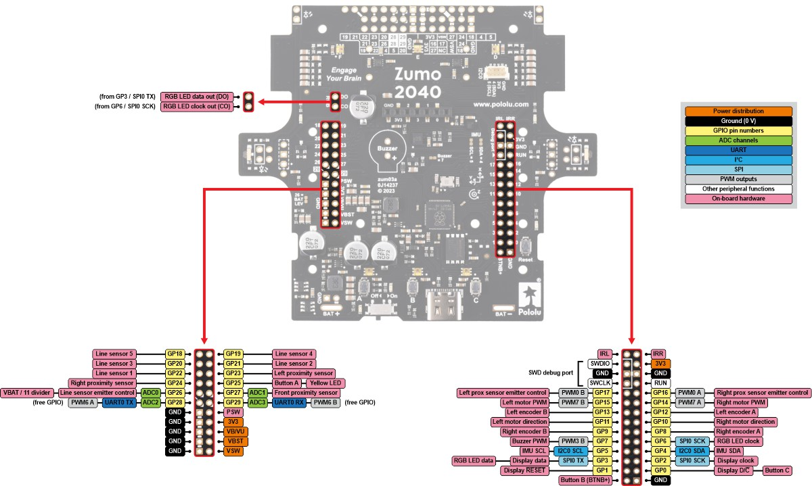
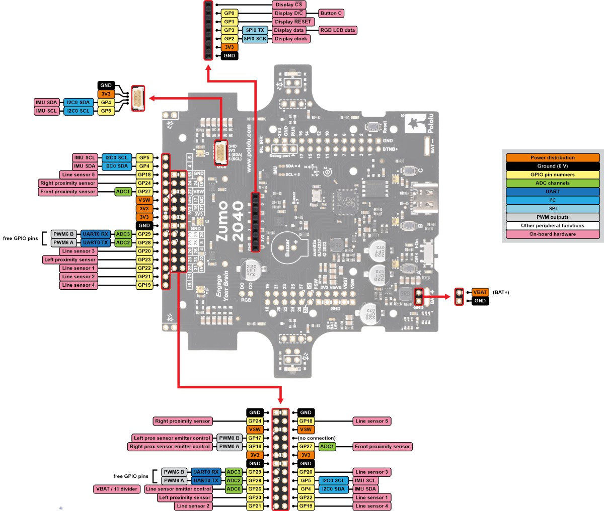
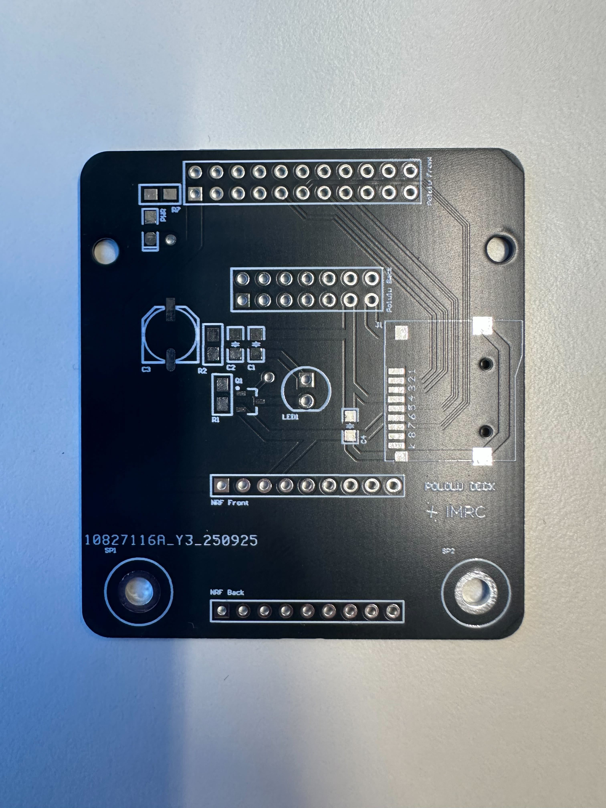
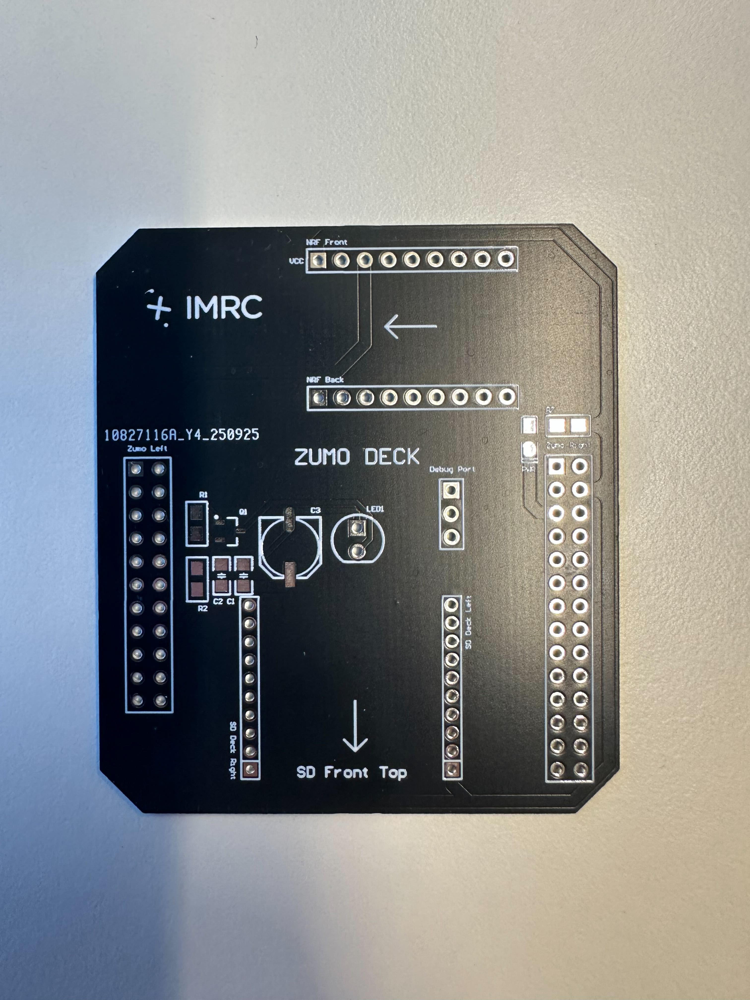

Hardware Overview
This page provides an overview of the hardware components used on the
Pololu 3pi+ 2040 and Pololu Zumo 2040 robots.
Both platforms share the same RP2040 control board and peripheral layout.
Common Hardware (shared by both robots)
- RP2040 microcontroller (same as Raspberry Pi Pico)
- Differential-drive system (2 motors + 2 encoders)
- LSM6DSO 6-axis IMU (Accel + Gyro)
- LIS3MDL 3-axis Magnetometer
- 5 × Line reflectance sensors (RC type)
- 2 × Bump sensors (IR reflectance)
- SH1106 128×64 OLED display (SPI)
- 6 × RGB LEDs (APA102-compatible)
- Micro SD card (requires individual deck for each robot)
- 3 user buttons (A, B, C)
- 1 buzzer (PWM capable)
- USB-C connector
- Full pinout compatibility with RPi Pico ecosystem
Pinout Diagram
Below is a high-level overview.
| Component | Pins | Notes |
|---|---|---|
| Motors (PWM) | GP14, GP15 | PWM7 A/B |
| Motor direction | GP10, GP11 | H-bridge control |
| Encoders | PIO inputs on GP8–GP13 | Quadrature |
| IMU I2C | SDA = GP4, SCL = GP5 | Shared bus |
| OLED SPI | GP0, GP1, GP2, GP3 | SH1106 |
| RGB LED SPI | GP3 (TX), GP6 (CLK) | APA102 |
| Line sensors | GP18–GP22 | RC decay timing |
| Bump sensors | GP16, GP17 | IR reflectance |
| SD Card Deck | GP18(SCK), GP19(MOSI), GP20(MOSI), GP21(CS) | SPI0 (shared conflict with Line sensors) |
| Buzzer | GP7 | PWM3B |
| Buttons A/B/C | GP25, GP1, GP0 | A shares LED pin |
Pin Assignment for Zumo and 3pi
Pololu 3pi+ Pin Assignment


Pololu Zumo Pin Assignment


Extensions and Decks
Both robots has individual decks that can be stacked on top of the base board to provide additional functionality, mainly for the nRF52840 Dongle and the micro SD card. Since both boards share the same functionality, the BOM files for both decks are provided here.
Pololu Deck
The Pololu Deck provides compatibility with the nRF52840 Dongle for wireless communication and a micro SD card slot for data logging. The deck connects to the base board via the headers on the main board. The manufacture file for the Pololu Deck can be found here.

Zumo Deck
The Zumo Deck provides compatibility with the nRF52840 Dongle for wireless communication and a micro SD card slot for data logging. The deck connects to the base board via the headers on the main board. For the current Zumo Deck a crazyflie micro sd card deck would be needed, but later it would be replaced by a single micro sd card port. The manufacture file for the Zumo Deck can be found here.

Actuators
Yellow LED
- Connected directly to RP2040 GPIO25
- Same pin as Button A → cannot use both simultaneously
- Example uses: status blinking, debugging
Motors
Pins
- Direction:
- GP10 → Right motor direction
- GP11 → Left motor direction
- PWM:
- GP14 → Right motor speed (PWM7A)
- GP15 → Left motor speed (PWM7B)
Quadrature Encoders
- Connected to both wheel shafts
- Uses custom PIO program (reads rising & falling edges on phases A/B)
- Provides:
✔ position (ticks)
✔ velocity (RPM)
Pin usage
- Typically GP8–GP13 depending on model (RP2040 PIO banks)
IMU (LSM6DSO + LIS3MDL)
LSM6DSO — 6-axis IMU
- Accelerometer + Gyroscope
- I2C address:
0x6A - Used for orientation & angular velocity
LIS3MDL — 3-axis Magnetometer
- I2C address:
0x1E - Provides heading estimation (Yaw)
- Not used currently in indoor environment due to drifting
Bus pins
- SDA: GP4
- SCL: GP5
- Both sensors share the same bus
OLED Display (SH1106)
Connection
- SPI0:
- Data: GP0
- Reset: GP1
- SCK: GP2
- MOSI: GP3
Features
- 128×64 pixels
- Monochrome
- Used for menus, data display, debugging
RGB LEDs (APA102-compatible)
- 6 individually addressable LEDs
- Arranged in a circular layout around the board
- Order: A → F (counterclockwise)
Pins
- Data (TX): GP3
- Clock (SCK): GP6
OLED and RGB LEDs share SPI0 but use different SCK pins → no conflict.
Line Sensors (5×)
- Positions: under robot front edge
- RC reflectance type (similar to Pololu QTR sensors)
Pins
- Emitter: GP26
- Sensors:
- DN1 → GP22
- DN2 → GP21
- DN3 → GP20
- DN4 → GP19
- DN5 → GP18
Notes
These pins conflict with SD card deck SPI pins. SD logging requires disabling line sensors.
Bump Sensors (2×)
Located near front bumper skirt.
Pins
- BL → GP17
- BR → GP16
- Emitter → GP23
Used to detect collision/contact direction.
Buzzer
- Pin: GP7
- Supports hardware PWM mode (PWM3B)
- Can play simple tones, beeps, or melodies
Buttons
| Button | Pin | Notes |
|---|---|---|
| A | GP25 | conflicts with LED |
| B | GP1 (QSPI_SS_N) | special function pin |
| C | GP0 | simple GPIO |
Pressing pulls the pin to GND.
SD Card Deck
Compatible with Crazyflie micro SD card deck. There are also decks specially designed for both robots that help us get rid of the cables when using the Crazyflie micro SD deck.
Pins (SPI0)
- CLK: GP18
- MOSI: GP19
- MISO: GP20
- CS: GP21
Important
- These pins conflict with line sensors → only one can be used at a time
- Required for trajectory logging (CSV), trajectory loading and robot configuration parameters loading.